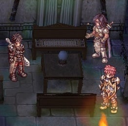

FAQ: PVP, BG, War of Emperium, and Guild Dungeon Investment System
In Biolabs, PvP, Battlegrounds, and WoE environments, most of the time you will be up against Demi Human race, Medium-sized enemies. The other 1% are odd ones like Homunculus or Demon race monsters in Biolabs 3F and 4F. Ruling out the minority, this means you'd want to wear gears that reduce the damage you receive from Demi Human, and increase the damage you inflict against them.
Several gears and cards such as Feather Beret, Thara Frog Card, and Zakudam Card for magic casters are usually considered basic necessities to obtain before participating in PvP-related content. Besides farming these gears and cards, there are various PvP-specific gears available in the server and various ways of obtaining them, such as purchasing Battlegrounds equipments using Valor Badges.
The WoE gears (also known as Siege set) can only be obtained through the Guild Dungeon Investment System. Players may have obtained Thanks Invest Tickets from Daily Rewards and from participating in GM-hosted events; these Tickets are part of that Investment System. In the following section, another way to obtain Thanks Invest Tickets and how they can be used to obtain WoE gears will be described as well.
Battlegrounds, Valor Badges, and Battlegrounds Equipment
See also:
Battlegrounds (BG) is a team-oriented, PvP system. There are a number of BG modes available in NovaRO, including Krieger von Midgard (KvM), Capture the Flag, Triple Inferno, Stone Control, Conquest, etc. Regardless of which BG mode you participated in, you will be rewarded with Valor Badges; more if your team wins the round.
Valor Badges can be used to purchase equipments from the Glorious Blacksmith (Glorious Weapons and Armors), Weaponsmith (Brave and Valorous Weapons), and Armorsmith (Battlegrounds Armors and Medals of Honor). You can also use Valor Badges to purchase Battlegrounds-exclusive supplies from Telma (Skill Catalyst Shop), Sketchy Dealer (Potions and Converters Shop), and Battlegrounds Cook (Stat Food Items). 
Win 5 rounds of Battlegrounds in a day and you will be eligible to claim your Daily BG Bounty (150 Valor Badges, 15 Proofs of Loyalty, and 2 Gold Coins).
Related:
- @joinbg : Join Battlegrounds queue. A round of Battlegrounds will begin after enough players join the queue (6 players for KvM and up to 10 players for Conquest).
- @leavebg : Leave Battlegrounds queue.
- @go bg : Warp to Battlegrounds Lobby.
- @voteskip : Vote to rotate the Battlegrounds mode.
- Talk to Login Settings NPC in Prontera Main Office 2F to toggle Battlegrounds announcements.
- List of Battlegrounds-exclusive equipments in RateMyServer. Note that in NovaRO KvM Points and Bravery Badges are not handed out as rewards from Battlegrounds. Valor Badge is the only currency used in NovaRO Battlegrounds.
WoE Gears a.k.a. Siege Set
WoE Gears are available in three sets, and their effects apply during WoE and PvP.
| WoE Set 1 | WoE Set 2 | WoE Set 3 | |
|---|---|---|---|
| Applicable Job Classes | Swordman, Merchant, Taekwon Kid, Taekwon Master | Swordman, Merchant, Archer, Thief, Gunslinger, Ninja, Taekwon Kid, Taekwon Master | Mage, Acolyte, Soul Linker |
| Armor | WoE Plate [1] | WoE Suit [1] | WoE Robe [1] |
| Garment | WoE Manteau [1] | WoE Muffler [1] | WoE Muffler [1] |
| Footgear | WoE Greave [1] | WoE Boots [1] | WoE Shoes [1] |
WoE gears are obtainable from Black Paw Jelly Bags, which can be purchased from the Thanks Ticket Machine in Malangdo for 50 Thanks Invest Tickets each.
Guild Dungeon Investment System
The Guild Dungeon Investment System is vital in accessing Guild Dungeons, Hall of Abyss, and obtaining WoE gears. Anyone in the server can invest in any of the Guild Castle Map (or Realms), with Zeny or with unique MVP items. The investment period begins 1 hour after WoE: SE ends.
- Investing with Zeny: Talk to the Cat Paw Merchant NPC in any Realm you want to invest in. Their locations are indicated in the following maps.
Geffen (Britoniah)

Aldebaran (Luina)
Juno (Schwartzwald)

Rachel (Arunafeltz)

Cat Paw Merchant and Gate Manager
You will be given 1 (one) Thanks Invest Ticket for every 10,000 Zeny invested. The Thanks Invest Ticket can be used with the Thanks Ticket Machine in Malangdo to purchase Red Paw Jelly Bags, Black Paw Jelly Bags, and WoE supplies. Note that only Black Paw Jelly Bags has the chance of giving you WoE gears.
- Investing with unique MvP items: Talk to Namis in Malangdo to turn in unique MvP items (e.g. Baphomet Doll, Osiris Doll, Fang of Hatii). A complete list of eligible MvP items can be viewed here. You will be rewarded with a Cats Invest Certificate every time you invest with items. Bring the Certificates to a Cat Paw Merchant in any Realm you want to invest in, and they will exchange 1 Certificate into 10 Thanks Invest Tickets.

Thanks Invest Ticket Machine in Malangdo

Thanks Invest Ticket Machine

Namis for Investing with items
The Guild Dungeon will be accessible to the members of the guild that owns a castle after 20 million Zeny has been invested to the realm, and then to everyone in the server after 70 million Zeny has been invested. When Guild Dungeons are accessible, investing is disabled.
Talk to the Gate Manager NPC in any realm to access the Guild Dungeon.
- Aldebaran/Luina Realm
- Luina Guild Dungeon 1F : (gld_dun02) Costs 10,000z to enter.
- Luina Guild Dungeon 2F : (gld_dun02_2) Costs 20,000z to enter.
- Juno/Schwartzwald Realm
- Nidhoggur Realm Dungeon 1F : Valkyrie Guild Dungeon (gld_dun03). Costs 10,000z to enter.
- Nidhoggur Realm Dungeon 2F : Valkyrie Guild Dungeon 2 (gld_dun03_2). Costs 20,000z to enter.
The Hall of Abyss will be accessible to the members of the guild that owns a castle after 70 million Zeny has been invested to the realm. Hall of Abyss monsters and Guild Treasure Chests have a chance of dropping WoE Weapon Supply Boxes, and these Boxes may contain Vellum Weapons.
Guild Dungeons are closed one hour before WoE: SE begins. Everyone in the server can begin investing again one hour after WoE: SE ends.